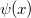

Real_polygamma
Real-polygamma-func
Definition:
evaluates an approximation to the kth derivative of the psi function  by
where x is real with x≠0, -1, -2, ... and k=0,1,......6.
For more information please review the s14aec function in the NAG document.
Parameters:
- x (input, double)
- The argument x of the function.
- Constraint: x must not be 'too close' to a non-positive integer.
- k (input, double)
- The argument k of the function.
- Constraint: 0≤k≤6
- (output, double)
- Approximation to the kth derivative of the psi function .